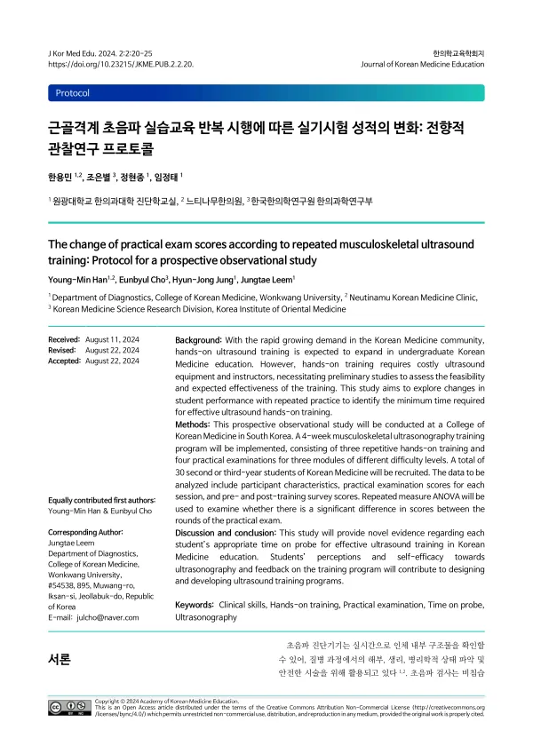

The change of practical exam scores according to repeated musculoskeletal ultrasound training: Protocol for a prospective observational study
Han YM, Cho E, Jung HJ, Leem J
Journal of Korean Medicine Education 2(2):20-25

첫 장 · 오픈액세스First page · open access
논문 소개Summary
2022년 대법원 전원합의체가 한의사의 초음파 진단기기 사용이 의료법 위반이 아니라고 판단한 뒤, 한의계의 초음파 교육 수요가 빠르게 늘었습니다. 개별 한의과대학에 초음파 실습만을 위한 정규 교과목이 생기는 것도 시간 문제로 보입니다. 그런데 실습에는 값비싼 기기와 교육 인력이 필요합니다. 기기 한 대가 받을 수 있는 학생 수도, 교수자 한 사람이 볼 수 있는 학생 수도 정해져 있습니다. 시수를 몇 시간으로 잡을지 정하려면 근거가 있어야 합니다.
학생 한 사람이 실제로 프로브를 잡는 시간이 학습 경험을 좌우한다는 것은 알려져 있지만, 최소한 얼마가 필요한지에 대한 연구는 매우 부족합니다. 이 논문은 그 물음에 답하기 위해 설계한 전향적 관찰연구의 프로토콜입니다. 결과가 아니라 계획을 미리 공개한 글이라는 점을 먼저 밝혀 둡니다.
한의학과 2·3학년 30명을 분석 대상으로 하고 탈락을 고려해 34명을 모집합니다. 정규 교과 밖에서 4주 프로그램을 운영합니다. 실습은 무릎을 스캔하는 모듈 세 개로 짰습니다. 난이도 하는 슬개상부의 대퇴사두건과 함요부, 중은 무릎 내측측부인대, 상은 외측측부인대입니다. 미국 근골격계 초음파 자격을 가진 한의사 세 사람이 한 모듈씩 맡습니다. 무릎을 고른 것은 근골격계가 한의사 초음파 사용의 90퍼센트를 넘고, 그중 무릎이 어깨 다음으로 많이 스캔되는 부위이기 때문입니다.
학생 5~6명이 한 조가 되어 기기 한 대를 씁니다. 모듈마다 교수자가 5분 시연한 뒤 학생 한 사람에게 5분씩 돌아가므로, 다섯 명 조라면 모듈 하나에 30분이 듭니다. 이 실습을 주 1회씩 세 번 반복하고, 이론만 들은 상태에서 치르는 한 번을 포함해 실기시험을 모두 네 번 봅니다. 시험은 표준화환자를 대상으로 스캔한 영상을 저장하게 하고, 교수자 세 사람이 미리 정한 기준으로 각자 채점한 뒤 결과가 갈리면 회의로 정합니다. 회차별 점수 차이는 반복측정 분산분석으로 봅니다. 이와 함께 교육 전후로 초음파에 대한 인식과 자기효능감이 어떻게 달라지는지도 조사합니다.
한계는 미리 적어 두었습니다. 단일 기관에서 30명을 보는 소규모 관찰연구라 결과를 일반화할 수 없습니다. 그리고 평가 대상이 초음파 영상의 질뿐이어서, 검사에 대한 설명이나 손위생처럼 술기 절차 전반은 보지 않습니다. 반복 실습에 따른 스캔 능력의 향상 하나에 초점을 맞추려고 일부러 좁힌 것입니다.
After the Supreme Court's en banc decision in 2022 that a Korean medicine doctor's use of diagnostic ultrasound does not violate the Medical Service Act, demand for ultrasound training rose sharply. Dedicated courses in individual colleges look like a matter of time. But hands-on training needs expensive equipment and instructors. There is a limit to how many students one device can accommodate and how many one instructor can supervise. Deciding how many contact hours to allocate requires evidence.
That the time a student actually spends holding the probe governs the learning experience is known; how much is minimally required is barely researched. This paper is the protocol for a prospective observational study designed to answer that question — a plan published in advance, not a set of results.
Thirty second- and third-year Korean medicine students are the analysis target, with 34 to be recruited allowing for 10 percent attrition. A four-week programme runs outside the regular curriculum. Training consists of three knee-scanning modules: the easy module covers the quadriceps tendon and recess in the suprapatellar region, the intermediate the medial collateral ligament, and the difficult the lateral collateral ligament. Three Korean medicine doctors holding the American registration in musculoskeletal sonography each take one module. The knee was chosen because the musculoskeletal system accounts for over 90 percent of ultrasound use by Korean medicine doctors, and the knee is the second most scanned region after the shoulder.
Groups of five or six students share one device. In each module the instructor demonstrates for five minutes and each student then gets five minutes, so a group of five spends 30 minutes per module. This hands-on session repeats three times, once a week, and four practical examinations are held — including one taken after the lecture alone, before any hands-on practice. In the examination students scan a standardised patient and save the images; three instructors score independently against predefined criteria and settle disagreements by discussion. Differences between rounds are analysed by repeated measures ANOVA. Students' perceptions of ultrasound and their self-efficacy are surveyed before and after.
The limitations are set out in advance. As a small single-institution observational study of thirty students, the findings will not generalise. And because only image quality is assessed, the wider procedure — explaining the examination, hand hygiene and so on — falls outside the evaluation. That narrowing is deliberate, to keep the focus on how scanning ability improves with repeated practice.
인용Cite
Han YM, Cho E, Jung HJ, Leem J. The change of practical exam scores according to repeated musculoskeletal ultrasound training: Protocol for a prospective observational study. Journal of Korean Medicine Education. 2024;2(2):20-25. doi:10.23215/JKME.PUB.2.2.20